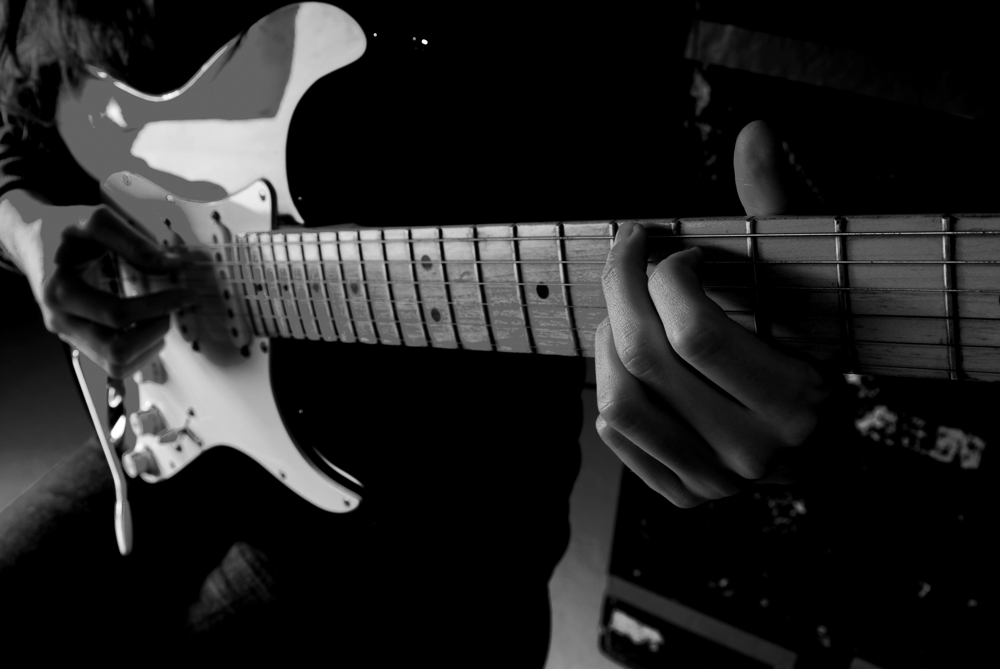

Opa, se enganou de página? Então volte para a página inicial
Aah, a música! Som, basicamente. Mas é um som bonito! Um som MUITO bonito! Você, meu caro, pode fazer música, uma boa música
(até porque existem músicas que não são tão boas assim...Farpas?Talvez :') )
Você tem a Música Clássica, o MPB, o Rock, o Jazz, o Blues, o Funk...Ah, espera, a página é sobre música, não é? Pois é. Continuando.
O Samba, o Indie (e seus outros 3 bilhões de sub-gêneros) e vários outros
gêneros compõem o maravilhos e grandioso universo da Música.
E aqui, meu caro, nós disponibilizamos alguns materiais para você começar a ser um MESTRE da arte de criar sons agradáveis...Ou se tornar
um músico. Os dois títulos funcionam.

1.Consiga Um Instrumento
Talvez seja o passo mais óbvio...E o mais essencial. Quer dizer, sem o instrumento, você não consegue seguir os próximos passos e...Bem, você já sabe. Nota:
Está fora de questão usar qualquer aplicativo do tipo "Guitarra Para Android" ou "Piano Online". Por favor. Não use. :)
2.Just Rock!
Certo, certo...Talvez não seja tão fácil. Você teria que estudar teoria musical, aprender a prática aos poucos, passar pela fase de levar o violão para a sua escola achando que
sabe tocar...Não, não. Muito compicado. Mas, ei, vale super a pena! Imagina você, VOCÊ, mandando ver com aquele Thunderstruck, hein?
Deixando as brincadeiras de lado (na verdade não), vamos continuar. Falando num geral, toda música tem instrumentos, e sim, a voz é um instrumento (Pentatonix que o diga), mas além destes,
nós temos o violão, a guitarra, o ukulele, a harpa, o baixo, o saxofone, o piano, a flauta, etc. São muitos..E qual é o melhor? Bom, talvez esta tabela te ajude...Ou só te deixe mais confuso. De qualquer maneira, nós
esperamos que ajude.
| Instrumento |
Estilo Apropriado(Ou Não) |
É o Melhor? |
Tempo de Aprendizado Para Se Tornar Um Mestre |
| Violão |
Todos, talvez? |
Claro que Sim |
A Vida Inteira |
| Guitarra |
Rock, Blues, Jazz.. |
Perde Para o Violão |
Quanto tempo Stairway To Heaven dura, mesmo? |
| Baixo |
Funk, Rock, Blues(?) |
Se você é o Flea, sim |
Quantos anos tem o Flea? |
| Piano |
Mais que o Violão |
Só se você é do Século XVIII |
567 Eras (Ou Mais) |
| Flauta |
Qualquer um, nada fica bom nela, mesmo |
Se você for o Simonetti... |
3 Segundos (ou menos) |